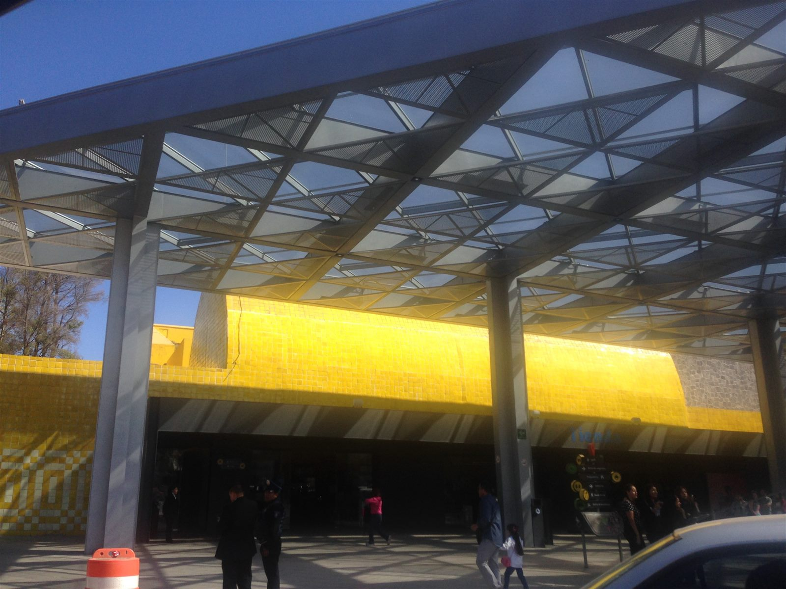

Información relevada en diciembre de 2024. Exposiciones, horarios y precios pueden haber cambiado; consultá el sitio oficial del museo.

Antecedentes
El Papalote Museo del Niño es un espacio inaugurado en 1993 en la Segunda Sección del Bosque de Chapultepec, en Ciudad de México. Este museo está diseñado para que los niños aprendan mediante experiencias prácticas y dinámicas, bajo el lema "Toca, juega y aprende". El Museo está enfocado en el aprendizaje de los pequeños a través de exposiciones interactivas de ciencia, tecnología y arte.
El edificio del museo fue diseñado por el arquitecto Ricardo Legorreta y combina colores vivos y formas geométricas para crear un espacio atractivo e inspirador para niños de todas las edades.
Cuenta con diversas salas y actividades enfocadas en ciencia, arte, tecnología y cultura, todas pensadas para estimular la curiosidad y creatividad infantil. Su famoso domo digital es una de las principales atracciones.
Exposiciones
Mi cuerpo y yo
Explora el funcionamiento del cuerpo humano a través de actividades interactivas que enseñan sobre la salud, el cuidado personal y la importancia de una vida activa.
El mundo y yo
Descubre cómo el medio ambiente influye en nuestras vidas y cómo podemos protegerlo para las futuras generaciones.
Conexiones
Una exposición que muestra la magia de la tecnología y las comunicaciones, ayudando a los visitantes a entender su impacto en la sociedad actual.
Horarios de Atención
Martes a domingos: de 10:00 a 18:30hs.
Precios
Costos de Admisión: Entrada general al museo $215. Martes a jueves 20% de descuento. Paquete Doble $240 Martes a jueves 20% de descuento.
Ubicación
Segunda Sección del Bosque de Chapultepec, Av. Constituyentes 268 Ciudad de México.
Información del Papalote Museo del Niño
Explora actividades, boletos y más en su sitio web: Ir al sitio oficial del Papalote (se abre en una pestaña nueva).